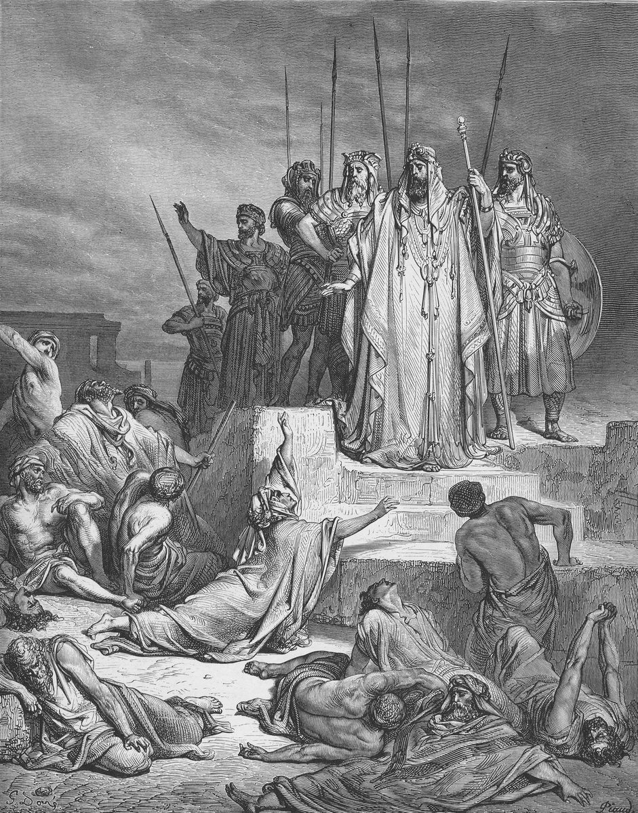

Lamentations 4 — The Mister Translation

Not drawn from Lamentations. The plate shows the siege of Samaria in 2 Kings 6:26–30, the passage this chapter’s note on verse 10 cites for the women who boiled their children (Lamentations 4:10). The same plate also stands on 2 Kings 7; no other fitting image was found.

Translator’s Notes
⭐ “How!” The chapter opens on the cry that opened chapters 1 and 2 and that is the Hebrew title of the book (eikhah). “How!” (eichah) stands in eighteen verses of the Hebrew Bible. And it stands in four verses of Lamentations: 1:1, 2:1, and here twice, at 4:1 and again at 4:2, so this is the only chapter that says it twice. Chapter 3 does not begin with it.
⭐ The dimmed gold. “Is dimmed” (yu’am) stands in this one verse, and so does “holy stones” (avnei qodesh). The KJV has “the stones of the sanctuary are poured out in the top of every street”, the NIV “The sacred gems are scattered at every street corner”, the TLB “the inlaid Temple walls are scattered in the streets” and the NWT 1984 “O how the holy stones are poured out at the head of all the streets!”. ⚠ The Hebrew does not say whether they are blocks of the temple or jewels; the shelf splits. The verb is shafakh, ‘pour out’, and verse 11 uses the same root of what Jehovah does with his anger. And “at the head of every street” stands in four verses of the Hebrew Bible: here; Lamentations 2:19 (now on these pages), where it is the place the young children faint of hunger; and Isaiah 51:20 and Nahum 3:10.
⭐ Gold, then clay. The sons of Zion were mesullaim bapaz, “weighed out in fine gold” (paz), and are now nivlei cheres, jars of clay, “the work of a potter’s hands”. The KJV has “how are they esteemed as earthen pitchers, the work of the hands of the potter”, the NIV “now considered as pots of clay” and the NWT 1984 “reckoned as large jars of earthenware”. The potter is the one of Jeremiah 18:3 (now on these pages), where a spoiled vessel is made again into another (18:4); and the jar is the one Jeremiah breaks in Jeremiah 19:10–11 (now on these pages), where Jehovah says he will break this people and this city as one breaks a potter’s vessel that cannot be made whole again. The verse says only what they are now reckoned as; it does not say they will be made again.
⚠ Jackals, or sea monsters. The first noun of verse 3 is written tannin and read tannim; the archive prints both spellings, the written word and then the one the reading tradition says to pronounce. The written form is the word for a sea monster or serpent (tannin), the read form the word for jackals, and the shelf splits on it: the KJV has “Even the sea monsters draw out the breast”, the Douay “Even the sea monsters have drawn out the breast”, the Geneva “Even the dragons draw out the breasts”, while the ASV has “Even the jackals draw out the breast” and the NIV “Even jackals offer their breasts to nurse their young”. This translation takes the read form, jackals, and prints the ostrich beside them.
⭐ The ostrich. The pairing is old: “daughters of the ostrich” (bnot ya’anah) stands in six verses of the Hebrew Bible, and in four of them the jackals are beside it, the two animals of the empty place: Isaiah 34:13, Isaiah 43:20 (now on these pages), where the jackals and the ostriches honor Jehovah because he gives water in the wilderness, Micah 1:8 (now on these pages), where the prophet will wail “like the jackals” and mourn “like the ostriches”, and Job 30:29. The form used here is a different one: the plural ye’enim stands in this one verse, written in two words in the scroll and read as one (ya’anah). The cruelty has a source: Job 39:13–17 says the ostrich leaves her eggs on the ground, is hardened against her young as though they were not hers, and that God gave her no wisdom. The jackals nurse their cubs; the daughter of my people does not.
⭐ A tongue stuck to the palate. The picture of a nursing child dying of thirst is one this book has already put in front of the reader: the child and the infant faint in the streets of the city at Lamentations 2:11, and the young children faint at the head of every street at 2:19 (both now on these pages). Here the children ask for bread, and the Hebrew gives only the bare fact, that there is no one to deal it out to them.
⭐ Scarlet and the ash heap. “Ash heaps” (ashpot), in this form, stands in this one verse. A form of the same word is the dunghill in Hannah’s song, from which Jehovah lifts the needy to sit with nobles (1 Samuel 2:8, now on these pages); here the ones raised on scarlet (tola, crimson) embrace it. The KJV has “brought up in scarlet embrace dunghills”, the NIV “Those brought up in royal purple now lie on ash heaps”. The direction of Hannah’s song is reversed in one verse.
⭐ Guilt, or its price. The word of verse 6 is avon (avon), which names both the crookedness and what it costs, and the chapter spends it at both ends: here, and in verse 22, where Zion’s avon is finished and Edom’s is visited, and again for the priests in verse 13. The shelf splits on verse 6 for exactly that reason: the ASV has “For the iniquity of the daughter of my people is greater than the sin of Sodom”, the KJV “For the punishment of the iniquity of the daughter of my people is greater than the punishment of the sin of Sodom”, the NIV “The punishment of my people is greater than that of Sodom” and the NWT 2013 “The punishment of the daughter of my people is greater than the punishment for the sin of Sodʹom”. This translation keeps “iniquity”, as it does at verses 13 and 22, and lets the reader hear both.
⚠ “No hands writhed over her.” “And no hands writhed over her” stands in this one verse, and the verb is chul, ‘to twist, to whirl, to writhe’; the shelf has three readings of it. The KJV has “no hands stayed on her” and the ASV “no hands were laid upon her”; the NIV has “without a hand turned to help her” and the NWT 2013 “with no hand to help her”; and the Geneva has “none pitched camps against her”. The comparison is with Sodom, which this verse says was overturned “as in a moment”: Jehovah rained brimstone and fire out of heaven on it (Genesis 19:24, now on these pages). Jerusalem’s end was not like that; the siege in 2 Kings 25:1–3 runs from the ninth year of Zedekiah to the eleventh.
⭐ Her nazirites. Nazir is ‘one set apart’ (nazir), and it is not only the vow-taker of Numbers 6: Joseph is the nazir of his brothers (Genesis 49:26 and Deuteronomy 33:16, both now on these pages), and in Leviticus 25:5 (now on these pages) it is the vine of the sabbath year, “your nazir”, whose grapes are not to be gathered. On this verse the shelf splits between the word and its sense: the KJV has “Her Nazarites were purer than snow”, the Geneva “Her Nazirites were purer than the snow”, while the ASV has “Her nobles were purer than snow” and the NIV “Their princes were brighter than snow”. Then the colors: the KJV has “more ruddy in body than rubies”, the NWT 1984 “more ruddy than corals” (peninim), and “their cutting” (gizratam) stands in this one verse, “their polishing was of sapphire” in the KJV.
⭐ Blacker than blackness. “Than blackness” (mishachor) stands in this one verse, and so does the verb for the skin that “has shriveled” (tsafad). The KJV has “Their visage is blacker than a coal”, the NIV “blacker than soot” and the NWT 1984 “darker than blackness itself”. The same people who were whiter than milk in verse 7 are not recognized in the street in verse 8.
⭐ Better the sword. The verse is a comparison and a verdict: those slain by the sword (cherev) are better off than those slain by hunger (ra’av), because the sword is quick and hunger is a slow wasting, “pierced through for lack of the produce of the field”.
⚠ “Boiled their own children.” The book has asked it before: Lamentations 2:20 (now on these pages) asks whether women should eat their fruit, the children they dandled, and this verse answers it. The ASV has “The hands of the pitiful women have boiled their own children”, the KJV “The hands of the pitiful women have sodden their own children” and the NIV “compassionate women have cooked their own children”. “The hands of compassionate women” stands in this one verse, and rachamaniyot is built on the word for a womb, the root of the compassions of Lamentations 3:22 (now on these pages). It was written down in advance and then seen: Deuteronomy 28:53–57 (now on these pages) lists, among the curses of a siege, that a man will eat the flesh of his sons and daughters, and that the tender and delicate woman will eat her children in secret; and in the famine of Samaria a woman says va-nevashel et-beni, ‘we boiled my son’ (2 Kings 6:29, now on these pages), the same verb as here.
⭐ The fire. “Jehovah has finished his fury” (chemah): the verb is kilah, ‘to complete’, and the same root that says the poet’s eyes are spent with tears at Lamentations 2:11. What he poured out (shafakh, as the stones of verse 1) was “the burning of his anger”, and what it did was kindle a fire in Zion that devoured her foundations. The NWT 1984 has “And he sets a fire ablaze in Zion”.
⭐ “Did not believe.” The scroll writes ve-chol, ‘and all’, where the reading tradition says kol, ‘all’, in the phrase “all who dwell in the world”: the word is tevel, the inhabited world, and the NWT 1984 reads “all the inhabitants of the productive land”. The verse is about disbelief: the kings of the earth did not believe that foe and enemy (tsar ve-oyev) could enter Jerusalem’s gates.
⚠ Prophets and priests. Verse 13 names the reason, and it is the leaders: the sins of her prophets and the iniquities of her priests, “who poured out in her midst the blood of the righteous”. Chapter 2 has already said that her prophets saw visions of vanity and delusion for her (2:14) and asked whether the priest and the prophet should be slain in the sanctuary (2:20, both now on these pages). The verse does not say which killings are meant. The nearest scene on these pages is Jeremiah 26:8–11, where the priests, the prophets and all the people lay hold of Jeremiah and say he deserves to die.
⚠ “Could not touch their garments.” The last clause of verse 14 is cryptic in the Hebrew, and the shelf reads it three ways: the KJV has “so that men could not touch their garments”, the NIV “dares to touch their garments”, the NWT 1984 “So that none are able to touch their garments”, and the Douay a different thing again, “when they could not help walking in it, they held up their skirts”. This translation keeps the plain sense, that the blood was on them and they could not be touched.
⭐ “Away! Unclean!” The cry is the leper’s: in Leviticus 13:45 (now on these pages) it is the person with the disease who must call out tame, tame, ‘unclean, unclean’. Here it is thrown at them by others. And the words that follow, “do not touch” (al tigga’u), stand in five verses of the Hebrew Bible: Numbers 16:26 (now on these pages), where Moses tells the congregation to move away from the tents of Korah’s men; Isaiah 52:11, which has the same words, sur sur … tame al tigga’u, said to those leaving a place and carrying the vessels of Jehovah; Psalm 105:15 and 1 Chronicles 16:22, which say not to touch his anointed; and here. The KJV has “Depart ye; it is unclean; depart, depart, touch not”, the NIV “Go away! You are unclean!” and the NWT 2013 “Go away! Unclean!”. Five verses on, the anointed of Jehovah is taken (verse 20).
⚠ The face of Jehovah. The Hebrew of verse 16 says penei Yhvh, ‘the face of Jehovah’, and the shelf splits on it: the KJV has “The anger of the Lord hath divided them”, the ASV “The anger of Jehovah hath scattered them”, while the Douay has “The face of the Lord hath divided them”, the NWT 2013 “The face of Jehovah has scattered them” and the NIV “The Lord himself has scattered them”. The second half is the unclear part, and the question is who is speaking: in the KJV and the ASV it is the reason (“they respected not the persons of the priests”), while the NWT 2013 puts it in the mouth of the nations (“Men will show no respect for the priests, no favor to the elders”) and closes the quotation after it. This translation keeps the Hebrew idiom, to lift the face, which is to show favor, and leaves the subject unnamed, as the Hebrew does. The scroll writes the word for the elders with one letter fewer than the reading tradition says.
⭐ Help that is vapor. “Looking to our help—vapor” stands in this one verse; the word is hevel (hevel), the breath that cannot be held. The KJV has “our eyes as yet failed for our vain help”, the ASV “Our eyes do yet fail in looking for our vain help” and the NIV “our eyes failed, looking in vain for help”. The nation is not named: the verse says only that it “does not save”. The scroll writes the first word of the verse in a form that the reading tradition changes.
⭐ Hunted, and run down. “Our end drew near” (qarav qitsenu) stands in this one verse. Verses 18–19 read like a flight, and one is told elsewhere: in 2 Kings 25:4–5 the men of war leave the city by night by the gate between the two walls, the king goes by the way of the Arabah, and the Chaldean army overtakes him in the plains of Jericho. The verse does not say that this is the flight it means.
⚠ “The anointed of Jehovah.” “The anointed of Jehovah” (mashiach) stands in ten verses of the Hebrew Bible: eight about Saul, in the scenes where David refuses to lift his hand against him or punishes the man who did (1 Samuel 24:6, 26:9, 2 Samuel 1:14 and the rest), one about David (2 Samuel 19:22), and this one. The verse names no king. The king the history fits is Zedekiah, taken as he fled, whose sons were killed before his eyes and whose own eyes were put out (2 Kings 25:4–7 and Jeremiah 39:4–7; his entry is in the encyclopedia). “The breath of our nostrils” (ruach appeinu) stands in this one verse, and the nostril is where Jehovah breathed life into the first man (Genesis 2:7, now on these pages). The shelf splits on the trap: the ASV has “was taken in their pits”, the NWT 2013 “captured in their large pit”, the NIV “was caught in their traps”, the Geneva “was taken in their nets” and the TLB “was captured in their snares”. And what the people had said of him was: “In his shadow we shall live among the nations”.
⭐ The daughter of Edom. “Daughter of Edom” stands in two verses of the Hebrew Bible, and both are here, 4:21 and 4:22. “The land of Uz” stands in two verses of the Hebrew Bible: Job 1:1 (now on these pages) and here (Uz); Jeremiah 25:20 has “the land of the Uz” with the article, in a list of nations that Jeremiah makes drink the cup, and the next verse names Edom (25:20–21, now on these pages). In that list Jerusalem and the cities of Judah are named first (25:18) and Edom later: the order of verses 21–22 here, Zion and then Edom. The prophet who tells what Edom did is Obadiah (now on these pages), who says it should not have rejoiced over Judah in the day of its destruction (1:12) and that as they drank on Jehovah’s holy mountain, so shall all the nations drink (1:16).
⚠ Drunk and bare, or drunk and sick. The cup is wine, and the shelf splits on what it does: the KJV has “thou shalt be drunken, and shalt make thyself naked”, the NIV “you will be drunk and stripped naked”, and the Geneva “thou shalt be drunken and vomit”. The scroll writes “dwelling” in a form the reading tradition changes.
⭐ Finished, and visited. Verse 22 turns on avon again: Zion’s is finished, Edom’s is visited. The NIV has “Your punishment will end, Daughter Zion; he will not prolong your exile”, and for Edom the KJV has “he will visit thine iniquity, O daughter of Edom; he will discover thy sins”. “To exile you” (lehaglotekh) stands in this one verse, and gillah, ‘he has uncovered’, is the same root: Zion will not be exiled again, and Edom will be uncovered. The two verbs of Edom are in the perfect, the completed form, in Hebrew, and the shelf and the revisions split on it: the NWT 1984 has “He has turned his attention to your error, O daughter of Eʹdom” and the NWT 2013 “But he will turn his attention to your error, O daughter of Eʹdom”. This translation reads them as futures that are certain, as the KJV does.
Patterns worth carrying forward
Where this translation keeps the exact / distinct words: “How” (eichah) kept as the one cry that opens verses 1 and 2 and the book’s first, second and fourth chapters; “iniquity” (avon) kept identical at verses 6, 13 and 22 (twice), so that the guilt of Zion and the guilt of Edom are visibly the same word; “the daughter of my people” kept fixed at verses 3, 6 and 10; and “poured out” (shafakh) kept as one verb across the holy stones (v1), Jehovah’s anger (v11) and the blood of the righteous (v13).
Echoes paid. The children who faint at the head of every street (2:19) are here the nursing child with a tongue stuck to its palate (v4); the question whether women should eat their fruit (2:20) is answered at verse 10; the prophets of 2:14 are named as the cause at verse 13. And the ayin/pe reversal that chapters 2 and 3 already used returns at verses 16–17 (acrostic).
Echoes planted. The flight and capture behind verses 18–20 are told at 2 Kings 25 and Jeremiah 39. The comparison with Sodom at verse 6 and the cup at verse 21 point to Genesis 19 and Jeremiah 25, both on these pages, and Edom’s own account is Obadiah.
Lamentations now stands at chapters 1–4 on this site. One chapter remains: 5 (twenty-two verses with no acrostic at all — the alphabet, the poem’s last structure, finally given up). Chapter 3, the sixty-six-verse triple acrostic at the book’s own center, is where the turn toward hope arrives — see Lamentations 3.